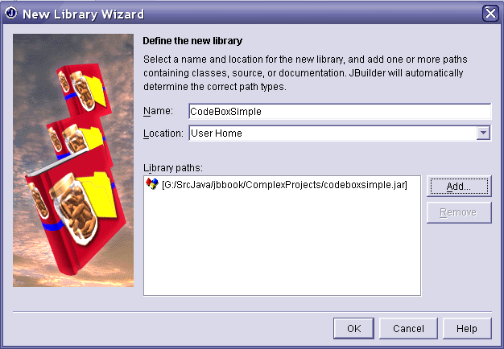
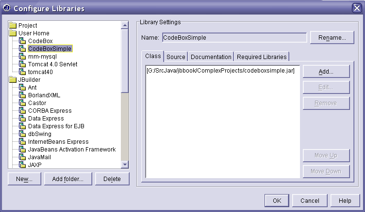
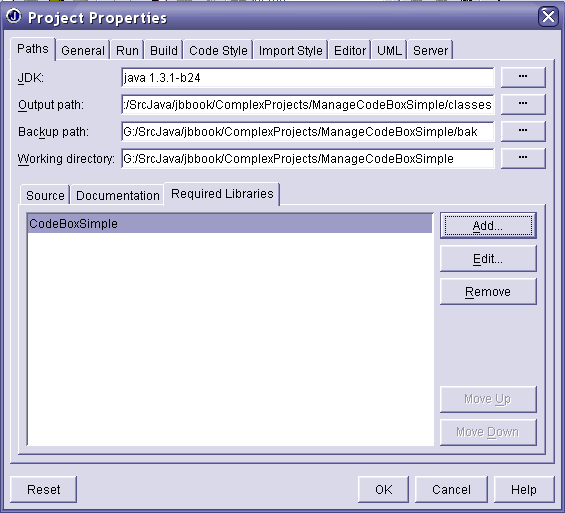

Here is an excerpt from the JBuilder Companion, Chapter 27, "Working with JarFiles." You can read more about this and related subjects in that chapter.
One of the core concepts in JBuilder development is the Library file. If you are working in the IDE and want to get something on the class path for your JBuilder project, the accepted way to do it is with a JBuilder library file. Library files are XML files that end with the extension .library. In all editions of JBuilder, they can be stored in the .jbuilder7 directory off of your home directory or in JBuilder lib directory. (If you are using another version of the product, then the JBuilder home directory might be called .jbuilder6 or .jbuilder8, etc.) Advanced editions give you additional locations to store your library files. For instance, you can store them in your current project directory.
You do not normally have to know the syntax for a JBuilder library file. As explained below, the IDE creates and manages them for you automatically if you choose Tools | Configure Library from the JBuilder menu. By using the JBuilder tools, you can create or use libraries simply by pushing a few buttons in the IDE. Nevertheless, I'm going to show you the actual syntax for a library file, in part to help demystify them, and in part to make sure you fully understand what it is these files do for you.
Here is what a typical .library file looks like:
<?xml version="1.0" encoding="UTF-8"?>
<library>
<!--JBuilder Library Definition File-->
<fullname>JavaHelp</fullname>
<class>
<path>[G%|/src/srcjava/classes/jh.jar]</path>
</class>
</library>
Here is another example:
<?xml version="1.0" encoding="UTF-8"?>
<library>
<!--JBuilder Library Definition File-->
<fullname>junit</fullname>
<class>
<path>[G%|/SrcJava/junit3.7/junit.jar]</path>
</class>
</library>
The key part is the class section. As you can see, it lists the path to the jar file that you want to include on the class path for your project. This is JBuilder's way of defining a classpath for you when you are inside the IDE. This is a very important concept: JBuilder frequently uses libraries to help you define your classpath!
NOTE: The library encoding provides substitutes for some characters. For instance, the colon character in the path is replaced by %|. Thus, the path G:/src/srcjava, becomes G%|/src/srcjava. You might know that this same kind of encoding is used in cookies.
It is customary for users to save their own library files in their home directory inside a directory called .jbuilderx, where x is the version of JBuilder that you are using. Note the period before the word jbuilderx. In Linux, that will usually be /home/UserName/.jbuilderx, and in Windows, that will usually be c:\Documents and Settings\UserName\.jbuilderx\. On the SE and enterprise versions of JBuilder, you can store these files as part of your project.
You can configure the libraries in one of two places:
1.Choose Tools | Configure Libraries from the JBuilder menu.
2.Choose Project | Project Properties | Paths from the JBuilder menu. In the tabs in the lower half of this dialog, turn to the Required Libraries page and choose the Add button.
I will explain more about this configuration process in the next section of this text.
In this section of the text you are going to do is create a library file that references your jar file. To create a library file, choose Tools | Configure Libraries from the JBuilder menu. Select the New button from the Configure Libraries dialog. Name your library CodeBoxSimple, and set its location to User Home. Click the Add button and browse for your jar file, which should be called codeboxsimple.jar. (In the context of this online article, the specifics aren't important. The point is simply that you name the library and point it at a jar file.) The jar file might be located in the c:\utils\classes directory, or where ever you placed it. When you are done, the New Library Wizard should look something like what you see in Figure 8.

Figure 8: The New Library wizard showing a library called CodeBoxSimple, stored in the .jbuilderx directory beneath the user's home directory, and pointing at a file called codeboxsimple.jar located in the g:\srcjava\jbbook\ComplexProjects directory.
When you press Ok in the New Library wizard you are returned to the Configure Libraries dialog. It should now appear something like the screen shot shown in Figure 9. Figure 9 contains more libraries in User than you probably have on your system, but the general appearance should be the same.

Figure 9: Viewing the CodeBox library in the Configure Libraries dialog.
At this stage, you have the CodeBox library set up and ready to be used inside one or more of your projects. To actually add it to your project, choose Project | Project Properties from the JBuilder menu. Turn to the all important Required Libraries page and click the add button. You should then be able to select your library from a dialog that looks like the JTreeView seen on the left hand side of the dialog shown in Figure 9.
The end result is that CodeBoxSimple is listed in your required libraries, as shown in Figure 10. Once the library is part of your project, you should be able to compile and run your project. If you have trouble with any of these steps, just open up the project that accompanies this book and compare it to what you have on your system.

Figure 10: Adding the CodeBoxSimple library to the required libraries section of the Project | Project Properties dialog.
You should now be able to run your project, and the error regarding the com.elvenware.codebox directory should be all cleared up. The point is that you are now accessing the StringBox class from the jar file, and not from some class file on your system. This may seem like a small accomplishment, but it really means that you can use the many open source jar files that you find on the internet.
Just as you can create a library that points at a jar file, so can you create a library that points at a package that contains a series of class files. If you then include that library in your project, you can automatically include raw class files in your project. This can be very helpful if somebody sends you one or more class files with no accompanying source.
NOTE: Though results can differ depending on the version of JBuilder that you are running, as a rule, I would not try to place these class files directly in your project. For instance, I would not place them in the default classes directory created by JBuilder. In some versions of JBuilder doing something like that can lead to weird errors, and in other versions, JBuilder simply summarily deletes the class file on general principles. Instead, if someone hands you a set of class files, I would suggest doing what I recommend in this section of the text. That is, point to them with a library file.
I'm mentioning this late in the chapter, because it is not something you would normally have to do. However, there are occasions when someone will hand you a bunch of raw class files, and ask you to include them in your project. You could, of course, wrap the class files in a jar file. But there are times when that might not be expedient. In such cases, you want to create a library file such as the one described here.
To create such a library file, proceed exactly as you did in the previous section. But when it comes time to select a jar file from the New Library Wizard, instead you should select the directory that contains the files. For instance, you might point at the /com/elvenware/codebox directories.
Consider a directory tree that looks like this:
g:\src\srcjava\classes\com\elvenware\codebox
In a case like this, you want to add the "g:\src\srcjava\classes" directory to your library, just as you added codeboxsimple.jar to your library in the previous example. When you are done, if you go to your User Home directory, you should be able to find the .library file that you created. In my case, that library file looked like this:
<?xml version="1.0" encoding="UTF-8"?>
<library>
<!--JBuilder Library Definition File-->
<fullname>CodeBoxClasses</fullname>
<class>
<path>G%|/src/SrcJava/jbbook/classes</path>
</class>
<source>
<path>G%|/src/SrcJava/jbbook/ComplexProjects/src</path>
</source>
</library>
As you can see, the library contains both the classes directory, and the directory where the source for the files is located. To insert both pieces of information, I needed to only point at the location of the classes directory. The classes directory would have been sufficient to allow me to compile the project, but knowing the location of the source helps when you do a build on your project. Of course, that section should be empty if you don't have the source. You do not need to include the source directory, it is merely a convenience that helps you build your project.
This section of the text on library files that point at packages containing classes is short, but it is not unimportant. There are occasions when a library of this type can be extremely useful to you. These occasions do not arrive very often, but when they do come up, they can be crucial to the success of a project.
NOTE: By choosing Project | Project Properties and working with the Source page in the bottom half of the dialog you can provide a second means of accessing source files that you want to include in your project. I discuss this concept at great length in the chapters earlies chapters of the Project Management section of this book. If you want you jar file to be known by JBuilder itself, you can put your JAR files in the JBuilder lib/ext directory. You can also edit the JBuilder.config file found in JBuilder's bin directory.
You could also place codebox.jar or other jar files that you want to use in the ext directory [jre/lib/ext] that is part of the JDK. Java find files in three places:
You can read more about the extension mechanism on the sun web site. The readme file for this CD lists a few reasons not to depend on the extension mechanism.